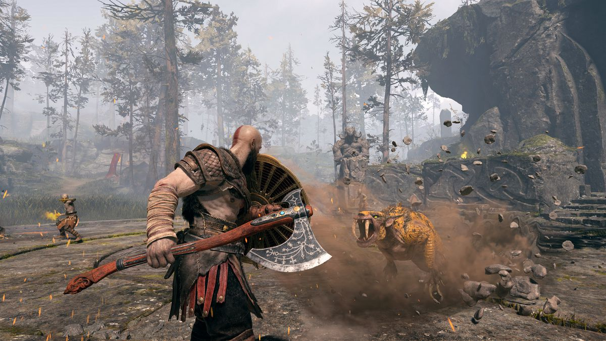

Vote for your #1 act 2018
We need your opinion!
Please give as many votes as you like for your favourite act
2018. The result will be released end of this summer.
MacBeth
One of the most iconic acts from Shakespeare.
Fans
260k
Footlose
A modern take on a classic about dancing your way to freedom.
Fans
980k
Live Laugh Love
A story about a group of girlfriends finding their way to happiness together.
Fans
880k

Sido Bushido
A modern take on ancient wars to show cruelties of humankind.
Fans
480k
I do
An act dedicated to the famous Shakespear to depict his life in a sarcastic way.
Fans
1250k